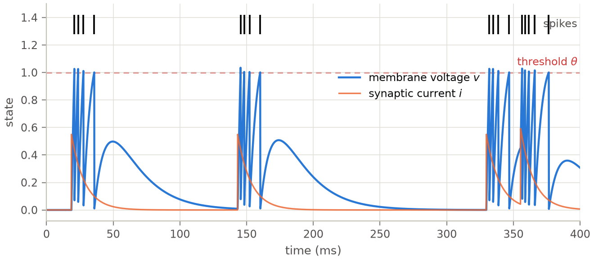
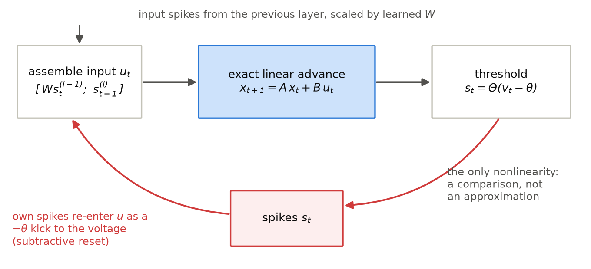
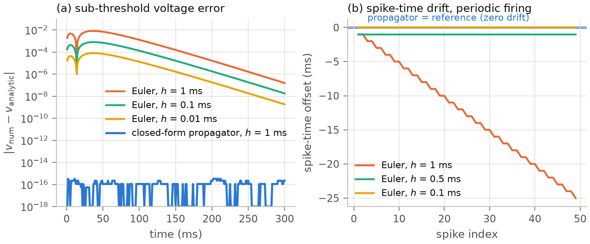
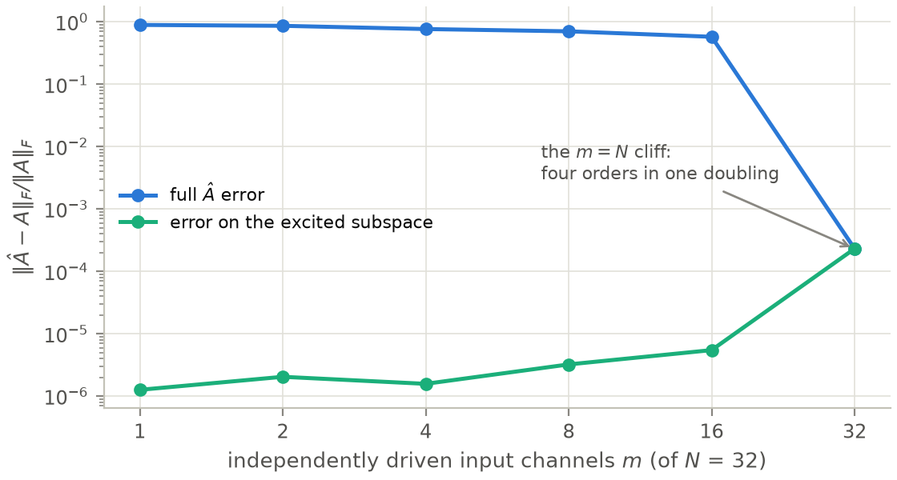
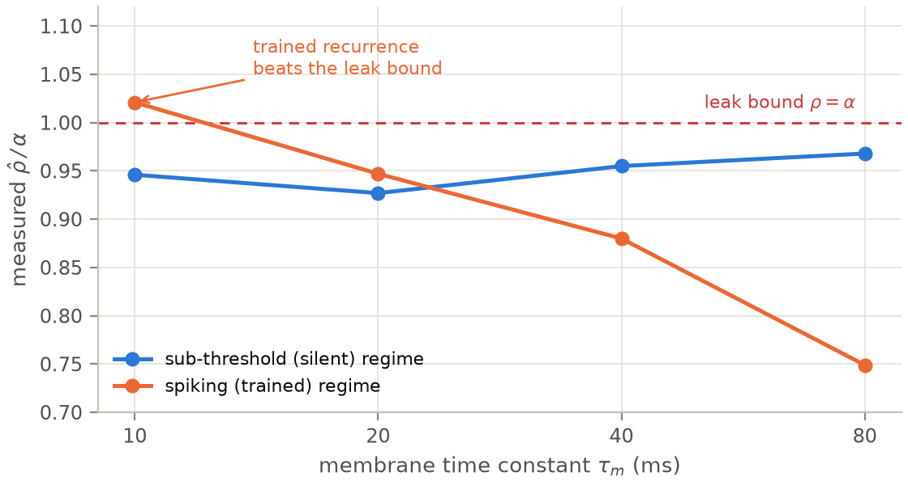
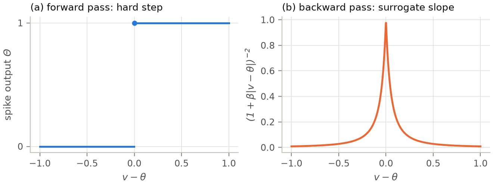
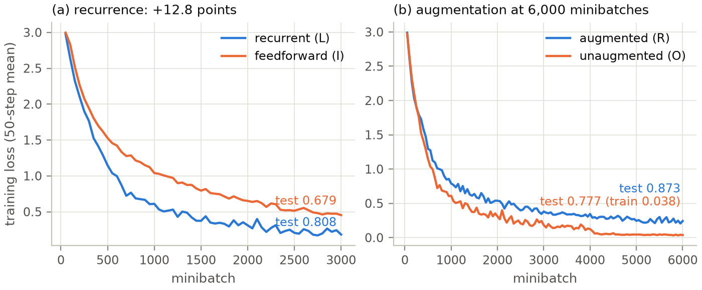
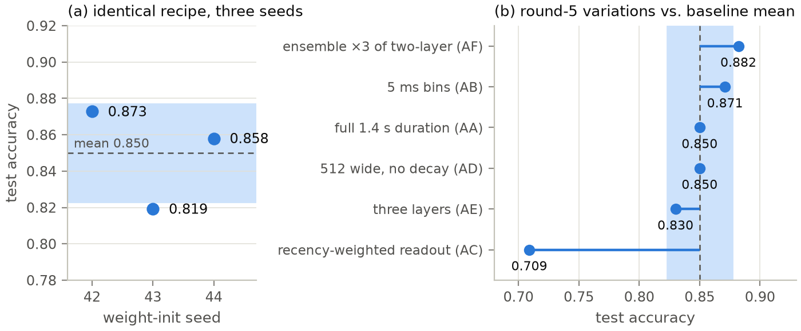
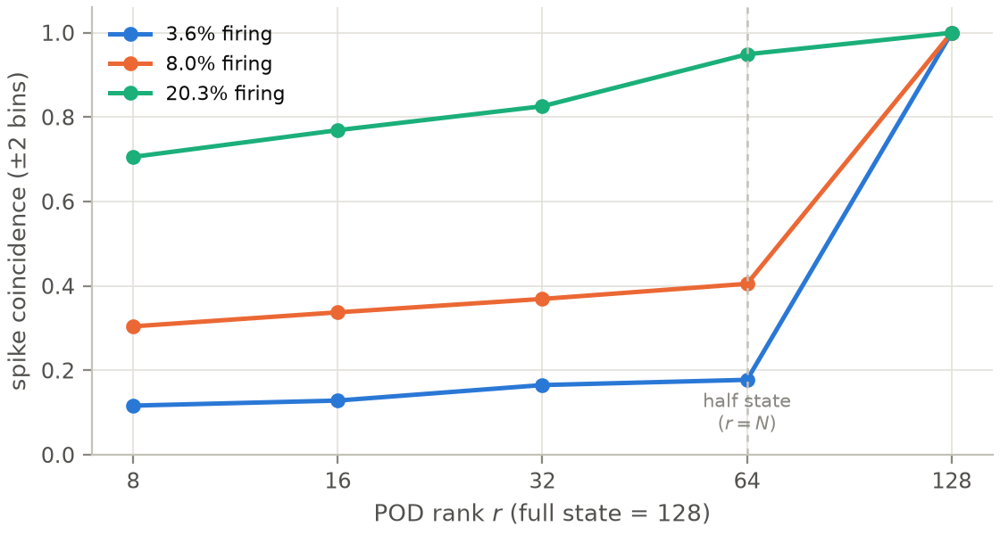

![Figure 4. Identification of A from spiking trajectories (N = 8 LIF neurons, state dimension 16, measurement noise \sigma = 10^{-4}). (a) With a Poisson probe input, both the known-B fit and the naive joint [A,B] fit converge with recording length; known-B is consistently more sample-efficient (1.7× lower error at 50 snapshots). (b) The dominant failure mode is excitation, not attribution: under a constant drive the state never leaves a low-dimensional set (\mathrm{cond}(X) \sim 10^{19}, versus 10^{3}–10^{4} when probed) and no method recovers A (relative error \approx 0.9 for both), while probed recordings identify it to \sim 10^{-4}.](figures/fig04-identification.png)
James Harris Draft v2 — August 2026 (revised with campaign rounds 6–10 and the measurement studies of docs/25–26)
Code, logs, and pre-registered protocols: https://github.com/jimeharrisjr/koopman-based-SNN
Networks of leaky integrate-and-fire (LIF) neurons are usually simulated by small-step numerical integration and treated as irreducibly nonlinear objects. We develop, implement, and stress-test the opposite view: between spikes an LIF network is exactly linear, and the one discontinuous event — the spike reset — can be folded into the control input of a discrete linear system \(x_{t+1} = A\,x_t + B\,u_t\). This is precisely the model class addressed by Dynamic Mode Decomposition with control (DMDc), which makes the network’s governing equations recoverable from recordings of its activity. We present the theory of this formulation, quantify its benefits (drift-free simulation at cost parity with a conventional simulator — measured at 1.02× — and operator identification to below \(10^{-8}\) relative error), and give an unusually candid account of its pitfalls: closed-loop identifiability and excitation requirements — sharpened here into a measured law (full identification requires every input direction driven; under-probed fits are excellent on the excited subspace and useless off it) — the unsuitability of raw spike trains as observables, the bilinearity of hard resets, the limits of spectral gradient arguments — likewise measured: backward gradients track the propagator spectrum only sub-threshold, while in operation learned recurrence beats the leak bound — and two pre-registered negative results on lifted linear surrogates of genuinely nonlinear neuron models, joined by a mapped feasibility frontier for reduced-order spiking rollouts whose rate dependence inverts our own registered prediction. Finally, we show that the exact formulation supports practical learning. A ten-round experimental campaign on the Spiking Heidelberg Digits (SHD) — the last five rounds pre-registered with frozen decision rules, the protocol commit pushed before each run — takes hand-rolled surrogate-gradient training from 50.2% to an honest 91.8% (a diverse three-recipe ensemble), with a 3-seed-mean best recipe at 88.9% and a best single run of 91.2%, inside the published state-of-the-art band. The campaign’s structure is its second contribution: four literature-billed features (adaptation, learned time constants, static and attention readouts) each measured null-or-negative in isolation with their mechanisms demonstrably engaged, then proved jointly worth five points by a frozen superadditivity test — the gap lived in interactions all along. A seed audit (±2.7 to ±3.6 points across weight initializations) disciplines every claim. All training runs on a laptop CPU, and every number reported here has a log file in the repository.
Spiking neural networks (SNNs) replace the dense synchronous arithmetic of conventional deep learning with sparse, asynchronous events. Their promise — energy budgets orders of magnitude below dense networks, and a model class closer to biological computation — is well documented, but so are their costs: simulation by small-step numerical integration accumulates drift, and training through a discontinuous spike nonlinearity requires approximations (Neftci, Mostafa & Zenke, 2019).
This paper develops one organizing idea and follows it to its limits. The sub-threshold dynamics of the standard LIF neuron are a linear ODE with a closed-form solution; the only genuinely nonlinear event is the threshold crossing. If the spike reset is treated as a known impulsive control input rather than as a modification of the dynamics, the entire network becomes a discrete-time linear system with control,
\[x_{t+1} = A\,x_t + B\,u_t, \qquad s_t = \Theta(v_t - \theta),\]
in which the threshold comparison decides only which entries of the input are switched on and never touches the state’s evolution. This is exactly the model class of Dynamic Mode Decomposition with control (DMDc; Proctor, Brunton & Kutz, 2016), the data-driven arm of Koopman operator theory (Koopman, 1931; Mezić, 2005; Brunton, Budišić, Kaiser & Kutz, 2022). Three consequences follow, and each is tested in this paper:
Exact simulation. The linear part advances by a
closed-form matrix exponential; nothing drifts, ever (§2.3). A permanent
test in the accompanying Rust library (kdmd-snn, built on
the koopman-dmd crate) requires spike-for-spike agreement
with a conventional reference simulator over 1,000 steps, and a
benchmark measured the exact engine at 1.02× the reference’s cost —
exactness is free, not merely fast.
Identification from data. Because the network honestly is linear plus control, DMDc can recover its operator from recordings (§3). With the input matrix pinned to its known value, the library’s permanent oracle test recovers \(A\) to \(\le 10^{-8}\); a fresh numerical replication in this paper reaches machine precision (\(2.5 \times 10^{-15}\) relative Frobenius error) and maps out where identification fails — including a quantitative probe-richness law with a cliff at full input rank.
Trainable exactness. Surrogate-gradient backpropagation through time, with the surrogate as the only approximation in the training loop, trains these networks on real neuromorphic data (§5) — culminating in an honest 0.918 on SHD, inside the published state-of-the-art band.
The paper is organized to be as useful to a skeptic as to an enthusiast. Section 2 gives the theory. Section 3 presents identification, including a quantitative study of when it breaks. Section 4 collects every pitfall and caveat we encountered, including two pre-registered experiments that failed and are reported as negative results. Section 5 reports the SHD training campaign, including its own audit. Section 6 discusses what the linear-plus- control view does and does not buy relative to the recent spiking state-space-model literature.
A note on method: this project pre-registers its falsifiable claims with frozen thresholds before running the deciding experiments, subjects results to adversarial review, and retains the failures in the record. From campaign round 6 onward the discipline is externally verifiable: each protocol is committed and pushed in its own commit before the runs it governs, so the protocol-before-results ordering rests on public hashes rather than documents’ internal dating. Where a claim below is enforced by a permanent test in the repository, we say so.
The current-based LIF neuron carries two state variables: a membrane voltage \(v\) and a synaptic current \(i\), with dynamics
\[\tau_m \dot v = -(v - v_{\mathrm{rest}}) + R\,i, \qquad \tau_s \dot i = -i + \sum_j w_j\, s_j(t),\]
where incoming spikes \(s_j\) deposit charge weighted by \(w_j\), and a spike is emitted when \(v\) crosses the threshold \(\theta\) (we normalize \(v_{\mathrm{rest}} = 0\)). Both equations are linear. Stacking \(x = [v, i]^\top\), the sub-threshold flow over a step of length \(h\) has the closed-form solution
\[x_{t+1} = A_{\mathrm{loc}}\, x_t, \qquad A_{\mathrm{loc}} = \begin{bmatrix} \alpha & \gamma \\ 0 & \beta \end{bmatrix}, \qquad \alpha = e^{-h/\tau_m},\; \beta = e^{-h/\tau_s},\]
with \(\gamma\) the exact current-to-voltage coupling accumulated over the step (the \((1,2)\) entry of the matrix exponential of the continuous generator). This is not an approximation of the physics; it is the solved physics, valid at any step size. The zero in the lower-left corner records the one-way causal structure of the model: current drives voltage, voltage never drives current.

A layer of \(N\) identical neurons has state dimension \(2N\) and the block-diagonal propagator \(A = I_N \otimes A_{\mathrm{loc}}\), so one step costs \(O(N)\), not \(O(N^2)\). Neurons interact only through spikes, which enter through the control term. Two known linear maps assemble \(B\): the synaptic weight matrix \(W\) routes presynaptic spikes into postsynaptic currents, and the subtractive reset routes each neuron’s own output spike back onto its own voltage with the fixed coefficient \(-\theta\):
\[x_{t+1} = A\,x_t + B\,u_t, \qquad u_t = \begin{bmatrix} s^{(l-1)}_t \\ s^{(l)}_{t-1} \end{bmatrix},\]
where \(s^{(l-1)}_t\) are the previous layer’s spikes and \(s^{(l)}_{t-1}\) the layer’s own spikes from the previous step. Subtracting a constant from one entry of the state is a linear operation, so after this move the dynamics are exactly linear-plus-control at every step, spikes included. The only remaining nonlinearity is the threshold comparison \(s_t = \Theta(v_t - \theta)\) — a decision, not an approximation (Figure 2). Recurrent connectivity adds a second learned matrix \(W_{\mathrm{rec}}\) routing the layer’s own previous-step spikes into its currents through the same door.

Two remarks keep this honest. First, the construction requires the subtractive (soft) reset. The hard reset (\(v \mapsto v_{\mathrm{reset}}\)) multiplies the state by the spike indicator and is bilinear in \((s_t, x_t)\) — it cannot be written as \(A x + B u\) with state-independent matrices (§4.4). Second, the same trick extends to spike-triggered adaptation: an adaptive LIF (AdLIF) neuron adds one more exponentially decaying state variable whose spike-triggered increment is just another fixed jump carried by \(u\), enlarging \(A_{\mathrm{loc}}\) to \(3 \times 3\) while preserving exact linearity between spikes. The library implements both under the same spike-for-spike equivalence tests.
In Koopman-theoretic terms (§2.4) the situation is unusually clean: the observables that linearize the flow are the state variables themselves, and the one discontinuity is exiled into the input channel rather than being approximated by a finite-rank operator across the jump — the same design choice as the “linear dynamics + isolated nonlinearity” predictors of Korda & Mezić (2018b).
Figure 3 quantifies the claim against the standard alternative. Panel (a) integrates a sub-threshold neuron with forward Euler at three step sizes and with the closed-form propagator, against the analytic solution: Euler error scales with \(h\) as expected, while the propagator sits at the double-precision floor (\(\sim 10^{-16}\)) at the coarsest step size. Panel (b) shows the consequence for spike timing: under a constant supra-threshold drive (threshold logic identical in all runs, so all differences come from flow integration), Euler at \(h = 1\) ms accumulates a phase error of a full inter-spike interval within 49 spikes — the spike train slips by 25 ms over one second — while the propagator, by construction, has zero drift at the same per-step cost.

The library’s benchmark gate (repository, docs/09)
completes the cost side: at \(N =
1024\) neurons and 100 steps, the structured exact engine
measured 3.61 ms per trial against 3.52 ms for a conventional reference
simulator — a ratio of 1.02×, parity within noise — while producing
bit-identical spike trains (state agreement \(\le 10^{-12}\) relative over 1,000 steps,
enforced by a permanent equivalence test). Exactness costs nothing; what
it buys is a simulation that cannot drift and a training Jacobian whose
linear part is exact (§5.1). The same benchmark also recorded the
mirror-image caveat: a dense fitted operator used naively for
inference ran at 274× the reference cost and was demoted by the
project’s pre-registered kill criterion — density is what the
block-diagonal structure exists to avoid (§4.1).
For a dynamical system \(x_{t+1} = F(x_t)\), the Koopman operator \(\mathcal K\) acts on observables \(g\) by composition, \((\mathcal K g)(x) = g(F(x))\), and is linear even when \(F\) is not (Koopman, 1931; Mezić, 2005). The price is dimension: a finite-dimensional \(\mathcal K\)-invariant subspace containing the state observables exists only for special systems (Brunton et al., 2022). Dynamic Mode Decomposition (DMD) is the standard finite-data approximation: given snapshot matrices \(X = [x_0 \ldots x_{m-1}]\) and \(Y = [x_1 \ldots x_m]\), it computes the best-fit linear operator \(A = Y X^{\dagger}\) via a (truncated) SVD of \(X\) (Kutz, Brunton, Brunton & Proctor, 2016), and Extended DMD lifts the state through a dictionary of observables before regressing (Williams, Kevrekidis & Rowley, 2015), converging to a projection of \(\mathcal K\) as data and dictionary grow (Korda & Mezić, 2018a).
DMDc extends the regression to actuated systems (Proctor et al., 2016): stacking inputs \(\Upsilon = [u_0 \ldots u_{m-1}]\), it solves
\[[A \;\; B] = Y \begin{bmatrix} X \\ \Upsilon \end{bmatrix}^{\dagger}\]
jointly (the Koopman-with-inputs framework of Proctor, Brunton & Kutz, 2018, and the lifted linear predictors of Korda & Mezić, 2018b, generalize this to lifted observables), or — when the input matrix is known — the better-posed reduced problem
\[A = (Y - B\,\Upsilon)\, X^{\dagger}.\]
The known-\(B\) variant is the one this project defaults to, for reasons that §3.2 makes quantitative: in a spiking network the reset column of \(B\) is \(-\theta\) by construction and the feed-forward columns are the known weights \(W\), so fitting them would add estimation variance in exchange for information we already possess — and, in the joint formulation, would expose the regression to the closed-loop collinearity between the state and the network’s own spikes.
For the plain LIF network, then, Koopman theory contributes a
viewpoint rather than a lifting: the linearizing observables
were already in hand, and DMDc supplies the identification machinery
that this viewpoint licenses. The DMDc solver required for this work did
not previously exist in the Rust ecosystem and was contributed upstream
to the open-source koopman-dmd crate (released in version
0.2.0).
The library’s identification gate is an oracle test: generate trajectories from a network with known \((A, B)\) — full spiking trajectories, resets included, with no masking of spike steps — hand the recording to known-\(B\) DMDc, and require the recovered \(\hat A\) to match the truth within \(10^{-8}\). This test runs on every build. For this paper we additionally replicated the experiment in an independent numpy implementation (\(N = 8\) neurons, 16 state variables, Poisson-probed input, 4,000 snapshots): the noiseless known-\(B\) recovery error is \(2.5 \times 10^{-15}\) relative Frobenius — machine precision — confirming that the subtractive-reset-as-control formulation is not merely a modeling convenience but an identifiable description of the spiking dynamics.
The textbook warning for DMDc is that inputs must be exogenous, and a spiking network violates this: its own spikes are deterministic state feedback, \(u_t \supset \Theta(C x_t)\) (Proctor et al., 2016, flag exactly this closed-loop caution). We quantified the practical consequences (Figure 4).
Three findings, in decreasing order of practical importance:
Persistency of excitation dominates everything. Recording a network under its natural, unvaried drive is not enough: with a constant input the trajectory collapses onto a low-dimensional attractor, the snapshot matrix becomes numerically rank-deficient (\(\mathrm{cond}(X) \approx 10^{19}\) versus \(\sim 10^{3}\) for a probed recording), and both estimators fail at \(O(1)\) error — pinning \(B\) does not rescue a recording that contains no information about most of the state space (probed recordings measured \(\mathrm{cond}(X) \sim 10^{3}\text{–}10^{4}\)). Identification protocols must inject exploratory input (frozen-noise probe currents in our experiments).
The closed-loop threat is real but subtler than the theory suggests. The spike train is strongly — but not exactly — collinear with the state: regressing the spike indicators on the state explains \(R^2 \approx 0.74\) of their variance in our bursty-drive runs, and the stacked regressor matrix \([X;\Upsilon]\) is accordingly ill-conditioned (\(\mathrm{cond} \sim 10^{18}\) versus \(\sim 10^{3}\) for \(X\) alone). Because the threshold indicator is binary, exact rank deficiency is avoided and the joint fit often survives in practice — but its safe operating window is far narrower. In one bursty-drive configuration, truncating the SVD at \(10^{-3}\) of the top singular value (a routine noise-suppression choice) left the known-\(B\) fit at machine precision while the joint fit acquired a \(2.2 \times 10^{-2}\) systematic error at zero noise — a bias that no amount of additional data removes, because the truncated directions are exactly where the state/spike attribution is decided. The same truncation can also harm the known-\(B\) fit whenever \(\mathrm{cond}(X)\) itself exceeds the truncation threshold, which returns us to finding 1.
Known-\(B\) is strictly preferable whenever \(B\) is known. It halves the parameter count (1.7× lower error at 50 snapshots in Figure 4a), removes the attribution ambiguity by construction, and — since the reset coefficient and the weights are known exactly in this architecture — discards no information. The library exposes both modes and documents the trap.
A follow-up study (pre-registered as docs/25 S-A in the repository) sharpened finding 1 into a quantitative law (Figure 5). Sweeping the number of independently driven input channels \(m\) at fixed layer width \(N = 32\): the full-operator error stays at \(O(1)\) for every \(m < N\) and collapses by four orders of magnitude in the single doubling to \(m = N\) — spike-reset feedback excites the voltage block (its rows recover better than the current block’s at every deficient \(m\)) but cannot substitute for missing synaptic-drive rank. The counterpart result is the practically useful one: restricted to the subspace the probe actually excited, the operator is recovered to \(\sim 10^{-6}\) even with a single driven channel. Under-probed identification fails globally, never locally: the fitted operator is trustworthy precisely on the subspace the data visited, and meaningless elsewhere. This is now the documented usage contract for the library’s identification API — check \(\mathrm{cond}(X)\), and interpret \(\hat A\) on the numerical range of \(X\).

Beyond recovery of \(A\), the identified operator supports the analyses that motivate the Koopman view: its eigenvalues give per-mode timescales \(\tau_j = -h / \ln|\mu_j|\), stability margins \(1 - |\mu_j|\), and oscillation frequencies, and the DMDc output basis yields rank-\(r\) reduced-order stepping of a recurrent layer at \(O(Nr)\) cost — validated in the library within 10% rollout RMSE in the sub-threshold regime (the spiking-regime extension is open; §6).
This section collects everything we know that a reader attempting this method should be warned about. Items 4.1–4.5 are analytical; 4.6 reports two pre-registered experimental failures; 4.7–4.8 concern training practice.
The most tempting misstatement of this work is that Koopman/DMD machinery makes the network linear. For current-based LIF with subtractive reset, the sub-threshold propagator is known in closed form, per neuron, with no data, no SVD, and no regression; DMD applied to such a network can only re-estimate known decay constants with sampling error. A substantial 2023–2026 literature (PSN, Fang et al., 2023; SpikingSSMs; P-SpikeSSM; SPikE-SSM; SiLIF) already builds SNN training directly on the linear-state-space form of LIF without Koopman language, and constitutes the baseline any Koopman-flavored claim must beat. The genuine contributions of the operator view are elsewhere: identification (§3), reduced-order modeling, spectral diagnostics, and — in principle — lifted surrogates of genuinely nonlinear neurons, for which see the negative results in §4.6. Our benchmark’s demotion of the dense fitted-operator inference path (274× the structured engine’s cost, §2.3) is the same point made economically: a dense identified \(A\) can never compete with a structure-exploiting update for homogeneous layers.
Treated quantitatively in §3.2. Summarized as advice: never fit \(B\) when you can pin it; never trust a fit on a recording whose input did not explore; and check \(\mathrm{cond}(X)\) before believing \(\hat A\), because rank truncation chosen to suppress noise will silently truncate the dynamics when the data are unexciting.
DMD regression assumes observables that evolve approximately linearly. Raw spike indicators do not: they are discontinuous in the state and carry no magnitude information. Every successful application of DMD to neural data uses continuous signals (e.g., ECoG voltages with delay embedding; Brunton, Johnson, Ojemann & Kutz, 2016). In this project all identification operates on membrane voltages and synaptic currents; spikes appear only in the input channel \(\Upsilon\), where their discreteness is harmless because \(B\) is linear in them by construction.
The subtractive reset (\(v \mathrel{-}= \theta\)) is a state-independent jump and folds into \(B u\). The hard reset (\(v \mapsto v_{\mathrm{reset}}\)) is \(v_{t+1} = (1 - s_t)(\alpha v_t + \ldots) + s_t\, v_{\mathrm{reset}}\) — bilinear in \((s_t, v_t)\), hence outside the \(Ax + Bu\) class with constant matrices. The Spike Response Model (Gerstner & Kistler, 2002) reaches the same conclusion from the convolutional side: its reset kernel formulation is precisely the soft reset. Libraries and analyses in this framework should default to the subtractive reset; hard-reset models require either a bilinear correction term or acceptance of approximation error at every spike.
An early version of this project’s premise claimed that the exact linear propagator “prevents exploding or vanishing gradients.” The literature does not support prevents, and neither do we. Gradient norms through the linear part scale as \(\rho(A)^T\) (Pascanu, Mikolov & Bengio, 2013), and any leaky — that is, dissipative — network has \(\rho(A) < 1\): that is what leak means. Gradients through the linear part of an LIF network vanish geometrically over long horizons exactly as they do in any conventional simulation, and the surrogate-derivative factors at threshold crossings (§5.1) are typically the dominant source of gradient attenuation in deep SNNs (Neftci et al., 2019). What the operator view actually offers is diagnosis and design: the eigenvalues are directly readable, per-mode credit-assignment horizons \(\tau_j = -h/\ln|\mu_j|\) can be reported, and the spectrum can in principle be constrained toward the unit circle as an explicit regularizer, in the spirit of unitary-RNN methods. That is a real capability; it is not automatic prevention, and we flag the distinction because we initially got it wrong.
We subsequently instrumented the trainer to measure this law directly (study S-B, docs/25–26 in the repository): the backward pass records the per-step norm of \(\lambda_t = \partial L / \partial x_t\), and an AR(1) fit extracts the effective per-step decay factor \(\hat\rho\), compared against the spectral prediction \(\alpha = e^{-h/\tau_m}\) across \(\tau_m \in \{10, 20, 40, 80\}\) ms (Figure 6). The result is a two-regime law. Sub-threshold — networks too weakly driven to spike — the measurement vindicates the diagnosis cleanly: \(\hat\rho = 0.93\)–\(0.97\, \alpha\), monotone in \(\tau_m\), with the \(\tau = 80\) ms credit horizon 3.45× the \(\tau = 10\) ms one (the small gap below \(\alpha\) is the reset-derivative path, which attenuates even in the absence of spikes). In operation, the law breaks in the most instructive direction: after only 30 training steps, the shortest-\(\tau\) network measures \(\hat\rho = 1.02\,\alpha\) — above the leak bound — because grown recurrent weights add backward credit paths the neuron spectrum knows nothing about, while at long \(\tau\) surrogate and reset factors drag \(\hat\rho\) far below \(\alpha\) and invert the \(\tau\)-ordering entirely. The practical conclusion reverses the natural regularization target: the lever that controls credit horizons in a working recurrent SNN is the recurrent-weight spectrum, not the neuron spectrum — which is also a gradient-level explanation of why recurrence is this campaign’s single largest accuracy ingredient (§5.3).

For genuinely nonlinear neuron models — Izhikevich’s quadratic model
(Izhikevich, 2003), AdEx (Brette & Gerstner, 2005) — no closed-form
linear propagator exists, and EDMD lifting is the principled hope, with
an established record on smooth neuron-type dynamics (e.g., the
isostable analysis of excitable FitzHugh–Nagumo dynamics; Mauroy, Mezić
& Moehlis, 2013). We pre-registered two experiments with frozen
accuracy gates before running them (repository, docs/04 and
docs/07). Both failed their gates, and the failure modes
are more instructive than a success would have been (Figure 7).
![Figure 7. Two pre-registered negative results on lifted surrogates of the Izhikevich regular-spiking (RS) neuron, replotted from the recorded gate tables (docs/05, docs/08). (a) The per-step EDMD surrogate (V2) nearly matches spike counts and first-spike latency but fails the ±2 ms coincidence gate at every registered configuration: a 4–9% per-interval period error compounds into unbounded phase drift (the \Delta t^* = 2 ms column “improves” coincidence only by emitting 9× too many spikes). (b) The spike-to-spike return-map surrogate (V2b) is perfect at the interior training current (I = 10: every spike within ±2 ms over a full second) and fails at the envelope’s edges — spurious spikes below rheobase, a near miss at the rheobase edge, and closed-loop error amplification under extrapolation.](figures/fig07-negative-results.png)
V2 — per-step EDMD surrogate. A polynomial-dictionary EDMD fit of the Izhikevich flow passed its sub-rheobase (quiescent) gates and failed every spiking gate: coincidence factors of 0.07–0.13 against a pre-registered gate of 0.80, with spike counts and first-spike latency nearly correct. The signature is cumulative phase drift — the same disease Euler integration exhibits in Figure 3b, now caused by dictionary misfit on the spike upstroke/reset re-entry region rather than by step size. Degree-3 dictionaries achieved better one-step residuals and then diverged at rollout (\(\rho(K)\) up to 350) — the classic EDMD overfit-to-instability trade. Notably, the experiment’s cost predictions held: coarse Euler failed the same ±2 ms window (P2 confirmed), so the surrogate did not lose on cost — it lost on its own accuracy.
V2b — spike-to-spike return map. The bounded rescue attempt regressed the inter-spike interval map directly, making per-cycle error the fitted quantity. Inside the training envelope it worked perfectly — coincidence 1.000 for both gated neuron types at \(I = 10\), something V2 never approached — and failed at the edges through three specific, pre-registered mechanisms: the approach-flow (time-to-first-spike) map is much harder than the on-cycle map (23–58% held-out error versus a 5% precondition); quiescence prediction fails as a censored-data problem (a map trained only on spiking segments happily predicts finite latencies below rheobase); and teacher-forced accuracy did not transfer to closed-loop rollout at the extrapolation current (\(-0.31\%\) interval bias amplifying to a 0.13 coincidence), a structural obstacle we recorded as closed-loop amplification. The registered consequence was executed: the nonlinear-surrogate track closed, and the library’s fitted- operator value cases reduced to reduced-order modeling and spectral diagnostics.
The general lesson for Koopman-style modeling of spiking systems: finite-rank linear surrogates across a spike discontinuity behave like regressions through a jump — they average over it. Event-level reformulations (fitting the map between spikes) can be locally exact but inherit an extrapolation cliff at the edges of their training envelope. Anyone proposing a lifted spiking surrogate should be required to state its validity envelope and its behavior under closed-loop rollout, because interior interpolation accuracy predicts neither.
A DMD-fit \(\hat A\) of a recurrent layer absorbs \(W_{\mathrm{rec}}\); the moment training updates the weights, the fit describes the previous network. Any scheme that trains through a fitted operator needs a re-fitting schedule (alternation, or streaming DMD), and the literature contains no ready-made answer for the SNN case. This project sidesteps the problem by training only through the closed-form operator, which depends on no data and can never go stale — but that option exists only because plain LIF is exactly linear, which is also why the fitted operator adds no inference value there (§4.1). The tension is structural: where the fitted operator is trivial it is also correct, and where it would be valuable it goes stale.
Section 5.4 measures a ±2.7-point test-accuracy spread across three weight initializations of an identical one-layer training recipe on SHD — and a later audit of the two-layer recipe measured ±3.6. These numbers retroactively reframe the campaign: every margin below roughly three points, anywhere, is individually inconclusive, which is why every claim from round 6 onward runs at three seeds under a frozen ±1.5-point claim-throttle band plus an engaged-mechanism gate. We consider the following practices non-optional for SNN benchmark work, all of them cheap: fix the data order and seeds so that any two runs differ only in the variable under test; evaluate on the full test set, never a subsample; re-run the best recipe under new seeds before believing it; ensemble across seeds when reporting a headline number, and report the spread; and log the losers. Every accuracy figure in Section 5 has a corresponding log file in the repository, including the failures.
The threshold \(\Theta\) has no usable derivative, so training uses the surrogate-gradient method (Neftci et al., 2019): the forward pass keeps the hard step — the spikes are real spikes — while the backward pass substitutes a smooth pseudo-derivative at the threshold (Figure 8). We use the SuperSpike fast sigmoid \(\sigma'(x) = (1 + \beta|x|)^{-2}\) (Zenke & Ganguli, 2018) evaluated at the pre-reset potential; exponential-kernel (Shrestha & Orchard, 2018), arctan, and boxcar surrogates are implemented as alternatives. Backpropagation through time unrolls the network over all input bins; because the sub-threshold step is the exact propagator of §2.1, the Jacobian of the linear part is exact, and the surrogate is the only approximation in the training loop. The gradients are implemented by hand in Rust with no autograd framework and are validated against finite differences on the smooth path; the readout is a linear map on mean output spike counts, \(\mathrm{logits} = R \cdot \frac{1}{T}\sum_t s_t\), trained jointly under softmax cross-entropy. Alternatives to unrolled surrogate BPTT exist and would be natural comparison points: e-prop factorizes the gradient into forward-computable eligibility traces (Bellec et al., 2020), and EventProp computes exact gradients of spike-time losses by adjoint methods with jump conditions at spike events (Wunderlich & Pehle, 2021) — the latter intellectually close to this project, since it too treats the between-spike dynamics as exactly integrable.

The Spiking Heidelberg Digits (Cramer, Stradmann, Schemmel & Zenke, 2020) are spoken digits (zero through nine, English and German — 20 classes, chance 5%) encoded into spike trains on 700 channels by a detailed cochlea model: 8,156 training and 2,264 test recordings. Our pipeline pools the channels (2:1 to 350 in the final recipes), bins spikes at 10 ms into 100 steps (1 s), and trains with Adam at \(5 \times 10^{-3}\), batch 32. LIF parameters are biologically ordinary (\(\tau_m = 20\) ms, \(\tau_s = 10\) ms). Evaluation uses the largest batch-divisible subset of the test set (2,240 of 2,264 samples) for every reported number. Every run consumes an identical minibatch sequence, with data shuffling and weight initialization seeded separately, so any difference between two runs is attributable to the change under test. The training-set augmentation used from round 3 onward corrupts each presentation independently: 15% random event dropout, spectral shift of up to ±25 channels, and ±10% time stretch.
The experimental campaign ran in ten rounds. Rounds 1–5 tested
batches of hypotheses against the previous round’s best recipe; rounds
6–10 each ran under a frozen, pre-registered protocol whose commit was
pushed before the runs (repository,
docs/14–23). Table 1 and Figure 10 summarize
the trajectory; Figure 9 shows the two decisive loss-curve comparisons
from the early rounds.
Table 1. Campaign milestones. Accuracy is the
honest value: the 3-seed mean where a seed audit exists, else
the recorded single run (full per-experiment tables: repository,
demo/RESULTS.md).
| Stage | Configuration change | Honest acc. |
|---|---|---|
| First demo | 100 ch, 1×128, 600 minibatches | 0.502* |
| Round 1 (I) | 350 ch, 1×256, 3,000 minibatches | 0.680 |
| Round 2 (L) | + recurrent hidden layer (\(W_{\mathrm{rec}}\) zero-init) | 0.808 |
| Round 3 (R) | + augmentation × 6,000 minibatches | 0.850 ± 0.027 |
| Round 4 (X) | + second recurrent layer (256–256) | 0.856 ± 0.036 |
| Rounds 5–7 | audits; single-axis features (τ, readouts): null/negative | 0.856 |
| Round 8 (AK) | + attention × learned τ × 5 ms bins, jointly | 0.889 ± 0.019 |
| Round 9 (AN) | ensemble ×3 of AK | 0.900 |
| Round 10 (AQ) | diverse ensemble {AK, AJ, X} | 0.918 |
*The first demo evaluated on a 512-sample subset; all subsequent numbers use the full protocol of §5.2. Rounds 3–4 were originally reported from single seeds (0.873, 0.886); the table shows their audited means.
Round 1 established an interaction that recurs throughout: input resolution and training budget must move together. Extra budget on coarse 7:1-pooled input reduced test accuracy (memorization), while the same budget on 2:1-pooled input paid honestly. Round 2’s single change — recurrent connections grown from an exactly-zero initialization by the through-time gradient — was the campaign’s largest effect at +12.8 points, consistent with the published literature in which recurrence is the known difference-maker on this dataset. Round 3 isolated a second interaction: at 6,000 minibatches the unaugmented recurrent network overfit (train loss 0.038, test 0.777) while the augmented one reached 0.873 — augmentation converts budget from memorization fuel into generalization, and neither ingredient worked alone. Round 4 found that depth pays only once the recipe supports it: the same second layer that had been harmful in round 1’s feedforward setting gained +1.3 points under recurrence and augmentation, while adaptive (ALIF) neurons — dominant on published leaderboards — lost accuracy in this configuration (homogeneous: −3.7 points), because the published ALIF wins depend on learned time constants and finer time resolution that this library does not yet implement.

![Figure 10. The ten-round campaign against the published landscape. Shaded bands mark the approximate published ranges on SHD for feedforward SNNs (0.48–0.71), recurrent SNNs (0.71–0.83), and the augmented/adaptive state of the art (0.90–0.94). Points are honest values (3-seed means where audited; error bars show the measured seed spreads); the flat segment at rounds 5–7 is the audits and the single-axis nulls of §5.5. The final three rungs — the superadditive combination, its homogeneous ensemble, and the diverse ensemble — enter the published band.](figures/fig10-campaign.png)
Round 5 was planned as a push past 0.90 and became an audit instead. Re-running the round-3 recipe unchanged except for the weight-initialization seed gave 0.873, 0.819, and 0.858 (mean 0.850, spread ±2.7 points; Figure 11a). The round-3 headline was therefore a lucky draw, and every sub-3-point margin in the campaign — including round 4’s +1.3 for depth as a single comparison, and round 3’s +0.4 for 512-wide-with-decay — is individually inside noise. The axis-level conclusions survive where effects were large (recurrence +12.8, augmentation × budget +9.6) or replicated across configurations.

The remaining round-5 experiments (Figure 11b) delivered mostly negative but informative results. A third recurrent layer lost ~2 points at 1.5× the cost — each depth increment appears to need an enabling ingredient this uniform recipe lacks. Recency-weighting the readout (exponential trace, \(\kappa = 0.95\)) collapsed accuracy by 14 points, demonstrating that the count readout is load-bearing: evidence for a word is spread across the whole utterance, and any temporal readout must add memory rather than replace the integral. Full-duration input and 5 ms bins both landed within seed noise of the defaults. Round 5’s honest number was the three-member ensemble of the two-layer recipe at 0.882 — matching the best single draw (0.886) while averaging away the seed lottery, its members’ errors too correlated for voting to buy more. A later audit (campaign round 8’s control arm) measured the two-layer recipe’s own spread at ±3.6 points across seeds — wider still than the one-layer band — so all seed-noise discipline below uses per-recipe measured spreads.
The features separating this recipe from the published 0.90+ systems were then implemented and tested one axis at a time, each under a frozen protocol with ±1.5-point decision bands, a 3-seed minimum, and a mechanism gate — a pre-registered check that the feature demonstrably engaged, so a null could never be blamed on dead code. Data-parallel batch threading (a ~9× wall-clock speedup with the bit-exact serial path preserved) made the 3-seed discipline affordable.
Every single-axis feature failed. Learnable per-neuron time constants — backpropagation into the closed-form propagator entries, which the exact formulation makes analytic — moved τ distributions across their entire permitted range and changed accuracy by −1.4 points (null; round 6). A learned static temporal readout profile, grown from the exact-identity initialization, swung its weights to sign-flipping extremes and cost 2.0 points (round 7): together with round 5’s recency collapse, this establishes that any static temporal reweighting on SHD discards evidence, because word alignment varies per sample. Spike-driven softmax attention over time — the data-dependent mechanism the published readouts use, likewise identity-initialized — concentrated to 6–9× uniform and bought +0.3 points (null). With round 4’s adaptation negative, the single-axis scoreboard read zero for four, every mechanism engaged.
Round 8 tested the only hypothesis left standing: interaction. The combination arm (attention × learned τ × 5 ms bins on the two-layer recipe) ran against a frozen additivity formula built from the recorded single-axis effects and a same-round fine-bins-only control. The single effects sum to −1.9 points; the combination delivered +3.3 — exceeding the additive expectation by +5.1 points and crossing the pre-registered superadditivity band. One member reached 0.9116, the campaign’s first run inside the published band; the honest 3-seed mean, 0.889, exceeds every earlier single-seed best. A mechanistic detail explains the earlier nulls: under attention at 5 ms bins, first-layer time constants learned faster membranes (means 11–24 ms), where round 6’s count-readout runs had inflated the same parameters toward the 100 ms clamp — the same learnable feature finds different optima in different contexts, which is exactly why it was worthless alone.
Rounds 9–10 banked the result. A homogeneous ensemble of three combination-recipe members evaluated at exactly 0.9000 (2,016/2,240 — the pre-registered milestone flag fired with zero samples to spare), while harder augmentation on the same recipe was an informative negative (engaged, −1.6). A third layer remained negative (−2.5) unless bypassed by zero-initialized skip connections, which recovered +3.0 — the enabler confirmed by its own frozen comparison — yet enabled depth only tied two layers, closing the depth axis with the mechanism in hand. The campaign’s final and largest surprise was the diverse ensemble: one member each of the combination, attention-only, and vanilla recipes — mean member strength just 0.873 — summed logits to 0.9179, three points above its own best member and 1.8 above the homogeneous ensemble. Decorrelation across readouts and time resolutions beat member strength, refuting our registered prediction in the favorable direction.
A network of subtractive-reset LIF neurons trained by hand-rolled surrogate BPTT on a laptop reaches an honest 0.918 on SHD — inside the published state-of-the-art band (0.90–0.94) — via a recipe whose every ingredient carries a registered, mechanism-gated verdict: two recurrent 256-neuron layers, learnable per-neuron time constants, spike-driven temporal attention, 5 ms bins, three-way augmentation, and ensemble diversity. The methodological finding is worth as much as the number: four literature-billed features were individually null or negative with their mechanisms engaged, and jointly worth five points by a frozen superadditivity test. Single-axis ablation, the field’s default evidence style, would have rejected every ingredient of the final recipe.
What the linear-with-control view actually buys. Four things, in the order we can defend them: (i) drift-free simulation at parity cost, with exactness enforceable by test rather than asserted (§2.3); (ii) unbiased identification of network dynamics from recordings, with the reset folded into a known control channel (§3); (iii) spectral transparency — timescales, stability margins, and mode structure of a trained network read directly off the identified operator; and (iv) an exact training Jacobian for the linear part, leaving the surrogate as the only approximation (§5.1). Against the spiking state-space-model literature (Fang et al., 2023, and successors), which occupies the neighboring “linear state + threshold” design point, contributions (ii) and (iii) are the differentiating ones: those works use the linear form for parallel training, not for identification or operator-theoretic analysis.
What it does not buy. It does not linearize anything that was not already linear (§4.1); it does not by itself extend to hard resets (§4.4), conductance-based synapses (bilinear in the state), or genuinely nonlinear neuron models — our two pre-registered attempts at the latter failed in instructive ways (§4.6); it does not repair vanishing gradients — and, we now measure, does not even bound them once recurrence trains (§4.5); a fitted operator for a layer under training goes stale by construction (§4.7); and it does not buy parallel-in-time training: the reset-as-control loop that provides exactness closes the state \(\to\) threshold \(\to\) input dependency at every step, which is precisely the structure the spiking-SSM literature removes (by dropping the reset) to obtain its parallel scans. Exact spiking dynamics with resets and time-parallelism are mutually exclusive in this model class; the supported (and sufficient, on our hardware) parallelism axis is the batch.
The reduced-order frontier, mapped. The rank-\(r\) value case, previously validated only sub-threshold, now carries a measured feasibility map for fully spiking rollouts (study S-C; Figure 12): a POD-projected reduced model with spikes computed from lifted voltages and fed back exactly. The sanity anchor holds (full rank reproduces ground truth to machine precision), and the rate law inverts our registered prediction: fidelity improves with firing rate — a half-state model reaches 0.95 spike coincidence at 20% firing but only 0.18 at 3.6% — because sparse spikes are rare threshold-grazing events whose timing flips under microscopic truncation error, while strong drive forces robust crossings. Reduced-order spiking models are therefore viable for high-rate, rate-level questions and fail hardest in the sparse regime where SNNs are prized. Rate statistics degrade far more gracefully than timing throughout.

An external calibration, and what it licenses. Transplanting the round-3 recipe onto an independent framework (snnTorch’s two-variable synaptic neuron, identical protocol) landed at 0.60–0.76 — below our pre-stated expectation, with one training collapse — and the identified cause is instructive: that framework’s Euler-flavored update couples synaptic current into the membrane with per-step gain 1.0 where the exact propagator’s \(\gamma = 0.239\), so hyperparameters tuned on the exact engine over-drive it fourfold (a labeled gain-corrected diagnostic recovered to 0.73–0.84). We draw the narrow conclusion only: the protocol transfers (our numbers are not a harness artifact), and hyperparameters do not transfer across sub-threshold integrator conventions — which is precisely the sensitivity the exact-propagator formulation exists to remove. No engine-superiority claim is made; the recipe had home-field advantage.
Remaining open problems. A principled re-fitting schedule for operators under training remains unaddressed (and moot for this library, which trains only through closed-form operators). The probe-richness law (§3.2) was measured with white-noise probes; structured probes might cross the \(m = N\) cliff more economically. On the learning side, the diverse ensemble’s win suggests diversity-with-member-strength as the next registered experiment, and the reset-free “PSN-mode” variant — the one route to time-parallel training — awaits a registered accuracy study before it can be entertained.
Treating a spiking network as what it mathematically is — an exactly linear system punctuated by threshold decisions, with resets riding the control channel — yields a simulator that cannot drift at no extra cost, an identification pathway with oracle-grade accuracy and now-quantified failure laws, and a training loop whose only approximation is the surrogate gradient — a loop that carried a laptop-trained network to an honest 0.918 on SHD, inside the published state-of-the-art band. The same investigation, pursued with externally verifiable pre-registration, delimits the idea sharply: the operator view adds nothing to what was already linear, fails (so far) to cross the spike discontinuity for genuinely nonlinear neurons, trades away time-parallelism for its exactness, and demands full-rank excitation, engaged-mechanism checks, and honesty about seed noise from anyone who uses it. Its accuracy story carries a warning for the field’s evidence habits: every ingredient of the final recipe was null or negative in isolation and the recipe works only jointly — single-axis ablation would have rejected all of it. Both halves — the capabilities and the limits — are enforced by tests, frozen protocols, and logs in the accompanying repository, which we offer as much as a methodological artifact as a software one.
The library, all experiment harnesses, raw logs, pre-registration
documents (docs/04–25, with results in the
adjacent documents), and this paper’s figure-generation scripts are in
the repository; from campaign round 6 onward each protocol’s commit was
pushed before its runs, so the ordering is hash-verifiable. The test
suite (cargo test --release, 128 tests) enforces the
exactness, equivalence, identification-oracle, gradient, and
identity-initialization claims on every build. The SHD sweep
(cargo run --release --features datasets --example shd_sweep <TAGS> [--seeds N] [--threads N])
reproduces every number in Section 5; raw logs for every reported run
are in demo/, indexed by demo/RESULTS.md. The
measurement studies of §3.2, §4.5, and §6 live in analysis/
(numpy) and examples/grad_horizon.rs; the snnTorch
calibration in baselines/. Figures 1, 3, and 4 are
generated by paper/scripts/make_figures.py (numpy
reimplementations of the library’s mathematics, seeds fixed); Figures
9–11 are plotted directly from the recorded sweep logs; Figures 5, 6, 7,
and 12 transcribe the recorded tables of docs/05,
docs/08, and docs/26. Runtimes: minutes for
the round-1 experiments, ~10–15 minutes per training run for the final
recipes at 16 threads, and minutes for each measurement study, all on an
Apple Silicon laptop.